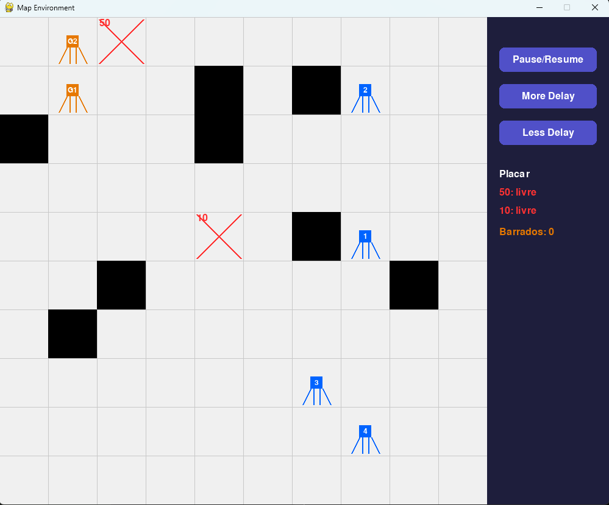
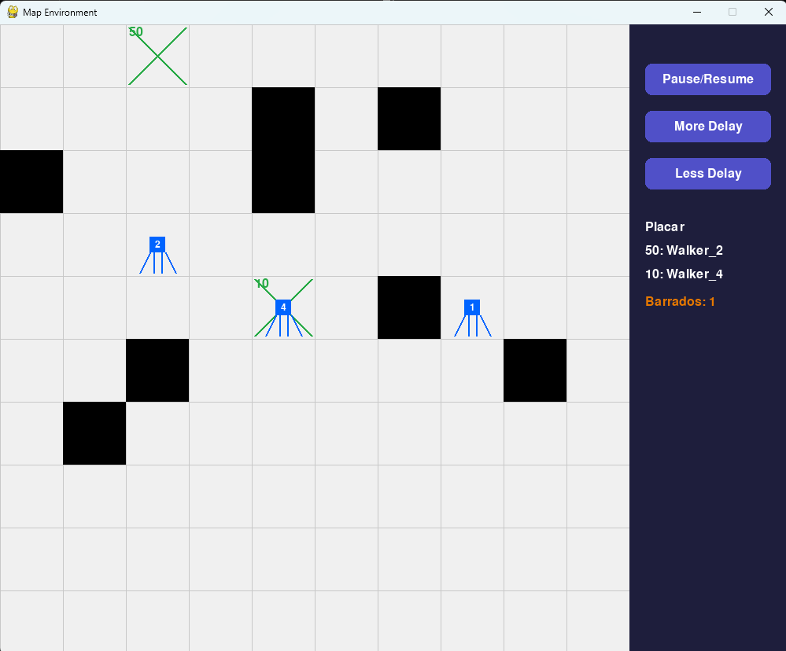
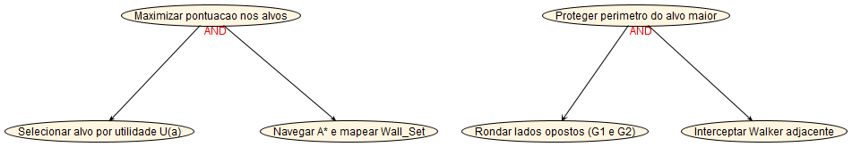
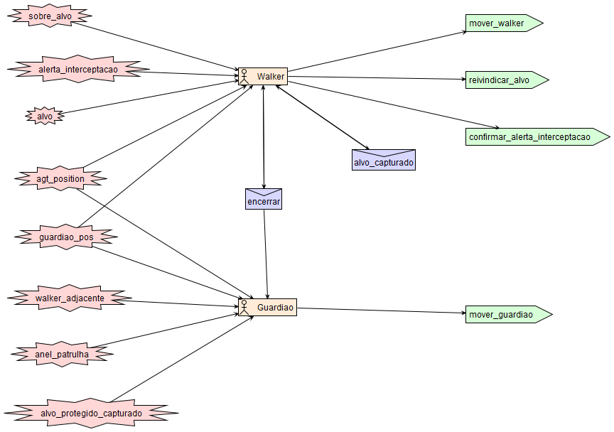
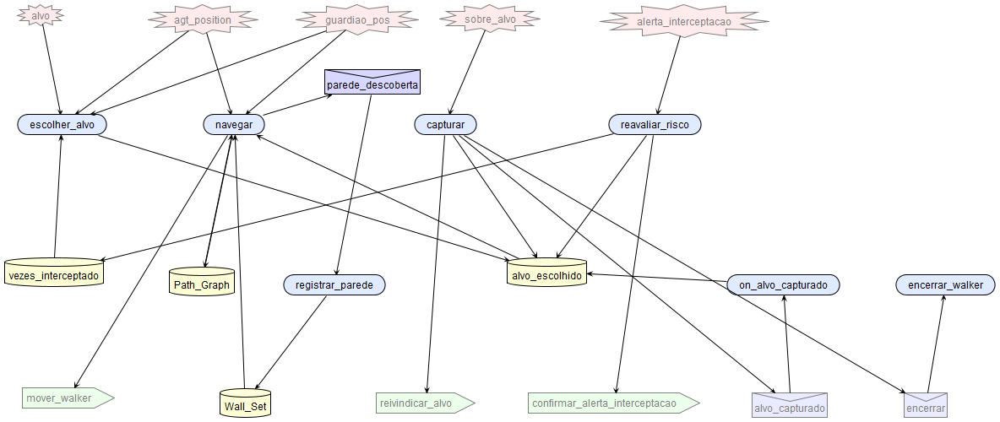
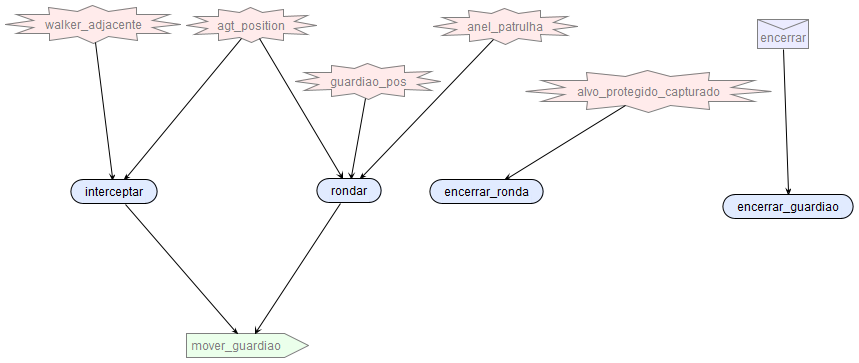
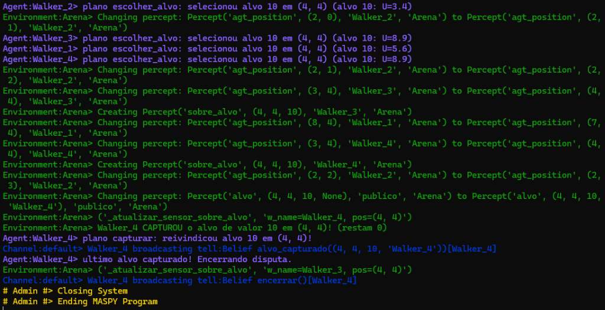

Partindo do exemplo base Navigation on 2D Grid do framework MASPY (maspy-ml), este projeto modela e implementa um ambiente competitivo em um grid bidimensional com paredes ocultas e dois alvos de valores distintos (padrão: 10 e 50). Múltiplos agentes Walker são posicionados aleatoriamente sem conhecimento prévio das paredes e competem para maximizar sua pontuação capturando os alvos disponíveis.
Para enriquecer a dinâmica multiagente mantendo uma arquitetura minimalista e 100% aderente às primitivas nativas do MASPY (Environment, Percept com filtro de grupos e Channel KQML), introduziu-se um segundo tipo de agente situado no grid: o Guardião, instanciado em dupla (Guardiao_1 e Guardiao_2). Enquanto os Walkers atuam orientados à utilidade e planejamento de rota (A), os 2 Guardiões patrulham em lados diametralmente opostos o perímetro do alvo de maior valor (50) e interceptam Walkers próximos, devolvendo-os à origem e criando um dilema real de recompensa versus risco e distância*.


A interface gráfica interativa desenvolvida em Pygame (MapVisualizer) reflete visualmente essa dinâmica em tempo real: o grid bidimensional exibe os agentes em suas respectivas posições, as paredes ocultas reveladas conforme as colisões (blocos pretos) e os alvos identificados em vermelho (livres) ou verde (capturados). Pela barra lateral direita, o usuário pode pausar, retomar e ajustar a velocidade dos ciclos (delay), além de acompanhar em tempo real o placar de capturas e a contagem de interceptações efetuadas pelos Guardiões.
| Component 1 | Walker Agent (1..N) — Description |
|---|---|
| Performance Measure | Maximizar a soma dos valores dos alvos capturados (ex.: 50 e 10), minimizando o número de passos executados e o número de interceptações sofridas pelos 2 Guardiões. |
| Environment | Grid 2D discreto (Arena) com paredes fixas ocultas, 2 alvos de valores distintos e outros agentes ativos (Walkers rivais e 2 Guardiões), com características: partially observable; deterministic (transições de ação, com inicialização estocástica); sequential; dynamic; discrete; and multi-agent (competitivo). |
| Actuators | Atuadores físicos na Arena: mover_walker(direction) (up, down, left, right, stay), reivindicar_alvo(x, y) e confirmar_alerta_interceptacao(); envio de mensagens KQML via broadcast no canal (alvo_capturado e encerrar). |
| Sensors | Percepções filtradas por grupo (filter_perceptions com foco em [self.my_name, "publico"]): coordenada agt_position(x, y), alvos alvo(x, y, valor, dono), posições guardiao_pos(g_id, gx, gy), sensores privados sobre_alvo(tx, ty, valor) e alerta_interceptacao(n), retorno físico de colisão em parede e mensagens no Channel. |
| Component 2 | Guardião Agent (2 instâncias: G1 e G2) — Description |
|---|---|
| Performance Measure | Maximizar o número de interceptações de Walkers invasores no perímetro do alvo de maior valor e retardar sua captura por meio de ronda coordenada em lados opostos do anel. |
| Environment | Mesmo grid 2D (Arena), atuando exclusivamente no anel de patrulha (distância de Manhattan 1 a 2) ao redor do alvo de maior valor: partially observable; deterministic; sequential; dynamic; discrete; and multi-agent. |
| Actuators | Atuador puramente físico mover_guardiao(direction) (desloca o Guardião 1 célula na direção decidida pelo seu plano BDI, sem lógica decisória no Environment). |
| Sensors | Sensores BDI na Arena: detecção reflexa privada walker_adjacente(w_id, wx, wy) (raio ≤ 2), própria posição agt_position(gx, gy), posições públicas guardiao_pos, células livres anel_patrulha, sinal alvo_protegido_capturado e mensagem encerrar. |
| Dimensão | Classificação | Justificativa no Domínio |
|---|---|---|
| Observabilidade | Partially Observable | As paredes pertencem ao grupo "oculto" no Environment; os Walkers não enxergam o labirinto nem a posição dos Walkers rivais, descobrindo obstáculos apenas ao colidir. |
| Determinismo | Deterministic (regras) / Stochastic (sorteio inicial) | Dado o estado exato do grid, o efeito de cada movimento e da validação atômica de captura (protegida por RLock) é determinístico; apenas a geração inicial do mapa é estocástica, mas sob a perspectiva individual de cada agente há incerteza causada pelas ações simultâneas dos demais. |
| Episódico vs. Sequencial | Sequential | Cada ação altera a posição futura do agente, o mapa parcial na Belief Base (Path_Graph / Wall_Set) e o risco acumulado em vezes_interceptado, impactando todas as decisões subsequentes até o fim da partida. |
| Estático vs. Dinâmico | Dynamic | Enquanto um Walker delibera em sua thread, os 2 Guardiões se deslocam pelo perímetro e Walkers concorrentes podem capturar o alvo visado a qualquer instante. |
| Discreto vs. Contínuo | Discrete | Espaço de coordenadas inteiras W × H, conjunto finito de 5 ações de movimento e ciclos discretos de raciocínio BDI. |
| Número de Agentes | Multi-agent (Competitivo) | N Walkers disputam recursos exclusivos (cada alvo só pode ter um único dono) enquanto 2 Guardiões (Guardiao_1 e Guardiao_2) atuam de forma antagônica protegendo o alvo principal. |
A tabela abaixo posiciona a arquitetura desenvolvida frente às cinco categorias clássicas de agentes inteligentes:
| Categoria | Presença no Projeto | Análise e Mapeamento na Implementação |
|---|---|---|
| Simple Reflex Agent | Implementado: 2 Guardiões | Guardiao_1 e Guardiao_2 não possuem crenças internas de estado nem algoritmos de busca; cada regra condição-ação é um plano @pl distinto para Goal("patrulhar") selecionado pelo motor BDI do MASPY: interceptar (se há walker_adjacente), rondar (avanço horário em anel_patrulha) ou encerrar_ronda (se alvo_protegido_capturado). |
| Reflex Agent with State | Subsumido no Walker | Não há um agente exclusivamente reativo com estado isolado, mas o Walker mantém modelo explícito do mundo na Belief Base do MASPY (Belief("Path_Graph"), Belief("Wall_Set") atualizada pelo evento registrar_parede e Belief("vezes_interceptado")) frente à observabilidade parcial. |
| Goal-based Agent | Implementado: Walker | O Walker decompõe Goal("agir") em planos concorrentes selecionados por contexto (capturar, reavaliar_risco, escolher_alvo e navegar), empregando busca heurística A* com flanqueio até Belief("alvo_escolhido"). |
| Utility-based Agent | Implementado: Walker | No plano escolher_alvo (ativado sob contexto ~Belief("alvo_escolhido")), o Walker avalia uma função explícita de utilidade calibrada para arbitrar racionalmente entre o alvo protegido (50) e o desprotegido (10). |
| Learning Agent | Não utilizado | Optou-se por planejamento online A* com utilidade adaptativa em vez de Q-learning pré-treinado, pois os alvos são consumidos dinamicamente durante uma única corrida competitiva sem repetição de episódios sobre o mesmo mapa. |
Função de Utilidade Calibrada e Custo de Flanqueio do Walker (frente aos 2 Guardiões):
U(a) = valor(a) - 1,1 · manhattan(pos, a) - risco(a, pos, pos_{G1}, pos_{G2})Onde
risco = 0para o alvo desprotegido (10) e, para o alvo protegido pelos 2 Guardiões (50), vale8,0 + 36,0 · vezes_interceptado(acrescido de+4,0se \min_{i \in {1,2}} d(pos, G_i) ≤ 2). Com essa calibração, todos os Walkers iniciam disputando o alvo50(U(50) ≈ 35 ≫ U(10) ≈ 1), mas basta uma interceptação para inverter a utilidade esperada (U(50) ≈ -0,6 < U(10) ≈ 1,2), fazendo o planoescolher_alvomigrar autonomamente para o alvo10enquanto o50ainda está em disputa. No planonavegar, células ocupadas ou adjacentes aG1/G2recebem penalidade A* (+6,0e+2,0), induzindo flanqueio pelas brechas.
A especificação arquitetural e detalhada foi construída nativamente na ferramenta oficial Prometheus Design Tool (PDT 3.2b) (arquivo de projeto pdt/Walker_Guardiao_MASPY.pd, validado sem alertas no Crosscheck de Projeto Arquitetural e Detalhado). As Figuras 1, 2 e 3 foram exportadas diretamente pelo PDT 3.2b.




| Agente | Objetivos & Crenças | Planos BDI Selecionados por Contexto (@pl) | Interação (Ambiente & Canal) |
|---|---|---|---|
| Walker (N instâncias) | Goal: agirBeliefs: Path_Graph, Wall_Set, vezes_interceptado, alvo_escolhido | capturar (ctx: sobre_alvo);reavaliar_risco (ctx: alerta_interceptacao);escolher_alvo (ctx: ~alvo_escolhido);navegar (ctx: alvo_escolhido, A* flanqueio);registrar_parede, on_alvo_capturado, encerrar. | Foco: [my_name, "publico"]Atuadores: mover_walker, reivindicar_alvo, confirmar_alerta_interceptacaoKQML: broadcast tell (alvo_capturado, encerrar) |
| Guardião (2 instâncias: G1 e G2) | Goal: patrulharBeliefs internas: nenhuma (Simple Reflex puro sem estado) | encerrar_ronda (ctx: alvo_protegido_capturado);interceptar (ctx: walker_adjacente & agt_position);rondar (ctx: agt_position & anel_patrulha);encerrar (evento KQML: stop_cycle()). | Foco: [my_name, "publico"]Atuador físico: mover_guardiao(dir)KQML: escuta Belief("encerrar") |
| Arquivo | Responsabilidade na Implementação |
|---|---|
arena_env.py | Classe Arena(Environment) puramente física: geração do grid conectado, sensores filtrados por grupo (sobre_alvo, walker_adjacente, alerta_interceptacao, anel_patrulha) e atuadores atômicos sob RLock (mover_walker, mover_guardiao, reivindicar_alvo). |
agentes.py | Deliberação BDI pura: Guardiao(Agent) sem estado com 3 planos concorrentes (interceptar, rondar, encerrar_ronda) e Walker(Agent) com 4 planos concorrentes em Goal("agir") + planos reativos (registrar_parede em Wall_Set, on_alvo_capturado, encerrar) e astar_flanqueio sobre Path_Graph. |
Pygame_Screens.py | Interface visual baseada nas telas de Walkers do MASPY (MenuScreen e MapVisualizer), com controles de pausa, velocidade (delay inicial de 0.8s) e destaque dos 2 Guardiões (G1 e G2). |
main.py | Instanciação de NUM_GUARDIOES = 2 e N Walkers (DELAY_INICIAL = 0.8), com execução gráfica (python main.py) ou em terminal (python main.py --sem-gui). |
pdt/Walker_Guardiao_MASPY.pd | Projeto nativo do PDT 3.2b validado sem alertas no Crosscheck contendo Goal Overview, System Overview, Agent Overviews (Walker e Guardiao) e descritores completos (pdt/abrir_pdt.bat). |
Trecho real de execução validada (python main.py --sem-gui): evidencia no log do MASPY a deliberação dos planos (escolher_alvo, capturar), o acionamento de sensores (sobre_alvo), atualização de percepções atômicas e a comunicação KQML via canal (alvo_capturado, encerrar):

Referências: